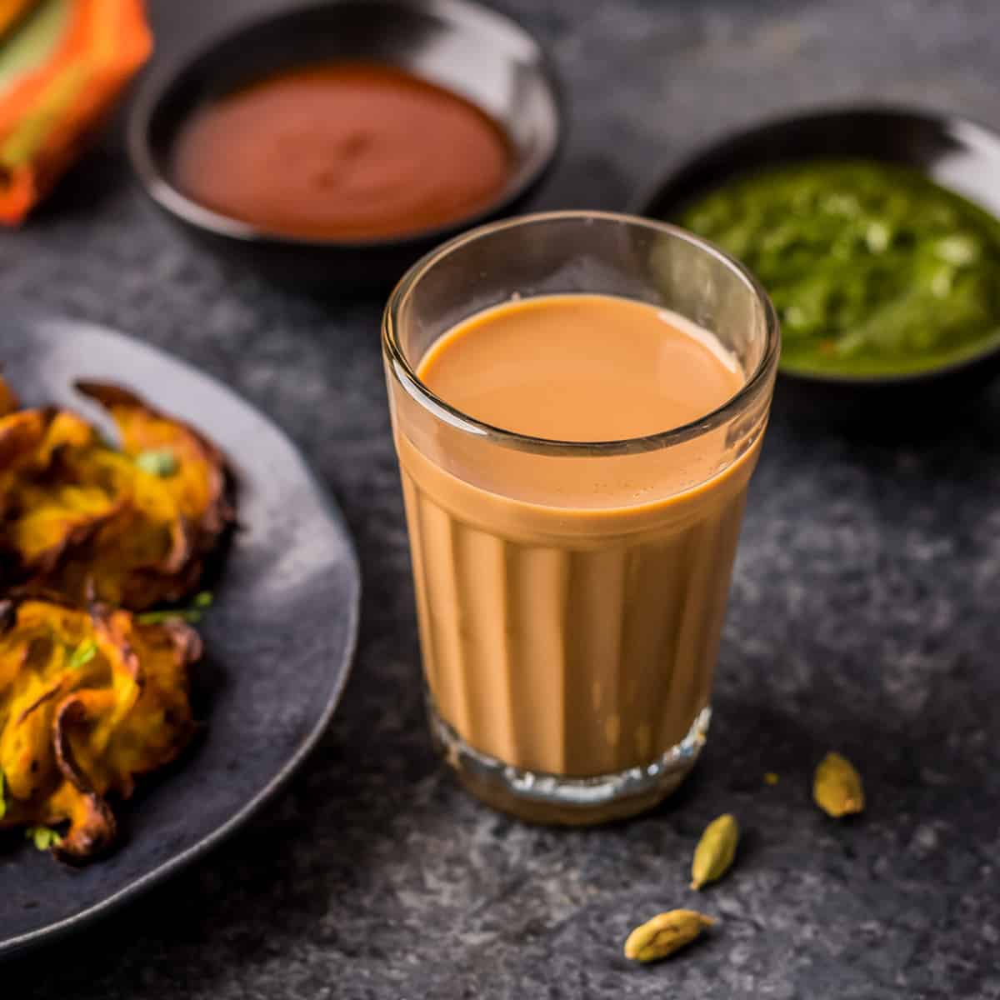

Masala Tea

Description
Masala Chai, also known as Masala Tea, is a popular hot beverage. Hot, sweet, spicy and aromatic it is loved by everyone. Every family may have their own recipe to make masala tea. Here is one for you to try!
Ingredients
- Tea powder - 2 tsp
- Cardamom - 2
- Black pepper - 4
- Cloves
- Ginger - 1 inch
- Milk - 1/2 cup
- Water - 1/2 cup
- Sugar - 2 tsp
Steps
- Firstly, in a small pan, take half cup of water and add cardamom, cloves, ginger, black pepper and boil for 2-3 min
- Furthermore, bring it to boil and lower the flame. simmer it for 1-2 minutes until you get the nice aroma.
- Also add tea leaves or tea powder and simmer for 3-4 minutes.
- Now add milk, sugar.
- Bring it to boil and brew for 2 minutes.
- Furthermore, switch of the flame and filter out the tea powder and spices with a fine mesh sieve.
- Finally, serve the masala chai with biscuits or with any breakfast recipes.
Back to home page